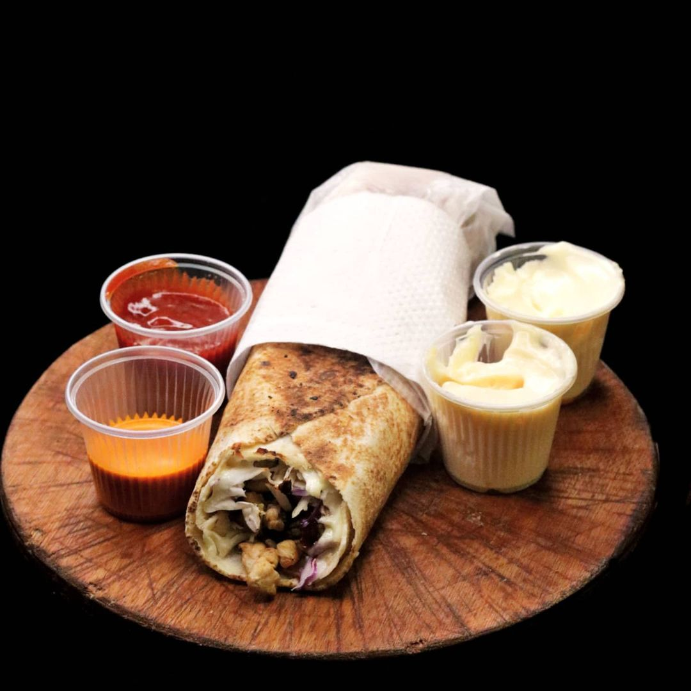

Lomito Arabe

El lomito árabe es un plato parecido al famoso shawarma. Este bocadillo con lomo de cerdo, lo haremos con tortillas de harina y tiras de carne sazonadas con soja y otras especias.
Anímate a probar algo nuevo y dale una oportunidad a lomito árabe, una vez que lo pruebes se volverá uno de tus platos favoritos.
Ingredientes
- 250 gr carne en cubitos pequeños (puede ser carne picada/molida)
- 1 cebolla
- 1 diente ajo
- 1 zanahoria
- 1 trozo repollo blanco
- c/n aceite
- sal, pimienta y orégano a gusto
- 3 cdas salsa de soja (rebajada con agua 50%)
- c/n mayonesa
Preparación
- En una sartén tipo wok coloca aceite. Una vez caliente, incorpora la carne cortada en cubos. Sal y pimienta a gusto. La sal hará que rápidamente la carne pierda humedad. Deja que se consuma ese jugo, revolviendo unas cuantas veces. Una vez se consume, revuelve un ratito para dorar un poco los trocitos de carne. Reserva.
- En la misma sartén en la que se rehogó la carne, se coloca un poquito más de aceite y agregas la cebolla en juliana fina y el ajo triturado. Salpimentar a gusto y agregar un poco de orégano. Revolver sin que se pegue ni se queme hasta que la cebolla esté bien cocida. Agregar la carne y mezclar bien revolviendo unos minutos. Agregar la salsa de soja y revolver hasta que se consuma. La preparación está lista!
- Corta repollo bien finito, en juliana. Ralla una zanahoria. Reserva cada uno en un bowl. Unta mayonesa sobre una cara del pan árabe (yo puse antes un poco de albahaca en aceite que tenía preparada). Coloca la cantidad que desees de zanahoria y repollo, luego la carne salteada. Arrolla y LISTO! Buen provecho!!!